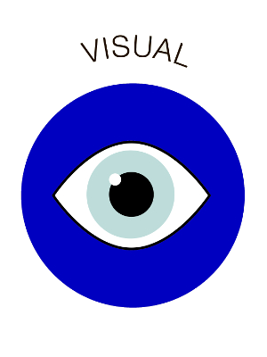

Visual learners learn best when information is presented in a written language format or in another visual format such as pictures or diagrams. If you are a visual learner, the suggestions that follow can help you to succeed in school to the best of your ability.
